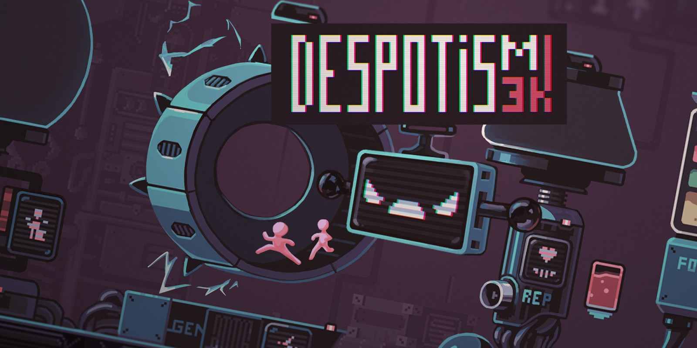

El macabro juego de humor negro que se volvió gratis y la rompe en Steam
por #99en1
Steam liberó un juego muy bizarro que, según la reseña oficial en la plataforma, tiene "un humor más negro que el corazón de tu ex". Al poco tiempo de haberse vuelto gratis, este macabro título se convirtió en tendencia, con miles de jugadores.
Despotism 3k es el bizarro título que liberó la plataforma de juegos para PC y que rápidamente se volvió tendencia. Este polémico juego consiste, básicamente, en esclavizar humanos. Estará disponible sin cargo hasta el próximo 11 de agosto de 2022. Quienes lo agreguen a su cuenta antes de esa fecha, lo conservarán para siempre. De todas formas, una vez finalizada la promoción, se podrá conseguir a un precio increíble: ARS$ 104,99.
El título que se consigue sin cargo, desarrollado por Konfa Games, consiste en esclavizar humanos. Los jugadores tomarán el control de una poderosa IA que utiliza a la raza humana para generar energía y construir un imperio. Este juego indie de gestión de recursos tiene un dramático argumento, por lo que será muy atrapante jugarlo. Los usuarios deberán gestionar bien su estrategia y a los humanos, ya que algunos pueden morir de hambre o de cansancio, lo cuál no será importante por los hombres en sí, sino para poder seguir generando recursos. Por eso, una de las cosas que tendrán que hacer será asesinar a los humanos más débiles que no sean productivos. Cada partida que se juegue será única, ya que los eventos se generan aleatoriamente.